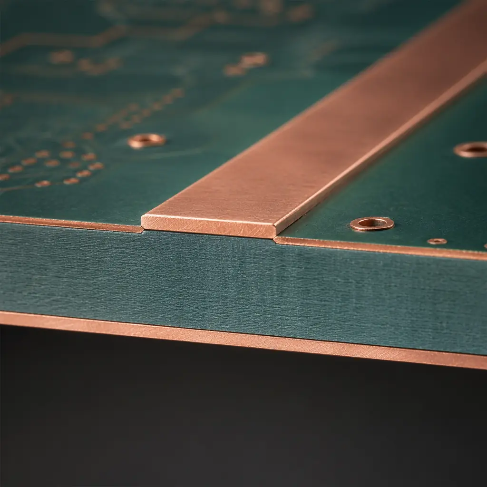
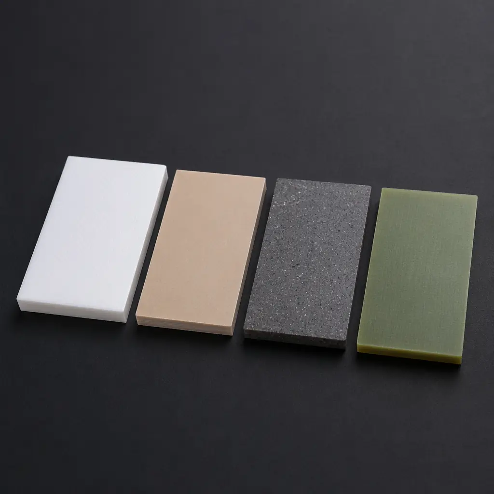
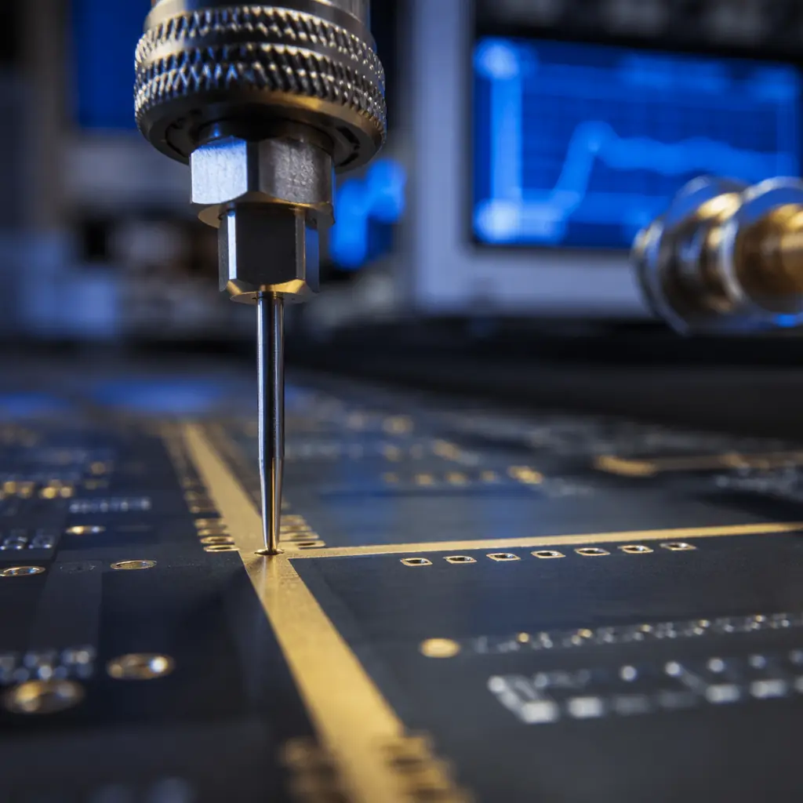

RF and microwave PCB manufacturing is not simply "high-precision PCB fabrication." It is a distinct engineering discipline where the substrate itself becomes a transmission medium, and every micron of copper geometry, every percentage point of dielectric tolerance, and every via stub contributes to — or destroys — signal integrity. A standard FR-4 board that works perfectly at 100 MHz may exhibit 12 dB of insertion loss at 6 GHz, rendering it useless for 5G, radar, or satellite communication. Understanding the material-performance-manufacturing triangle is what separates successful RF PCB programs from expensive field failures.
At Huaxing PCBA, our Shenzhen facility handles RF PCB production across 8 SMT lines with dedicated impedance-controlled process flows. We routinely fabricate RF boards on Rogers RO4000 and RO3000 series, PTFE-based substrates, and ceramic-filled hydrocarbon laminates — supporting frequencies up to 40 GHz with controlled impedance tolerances of ±5% on critical traces. This guide covers what RF design teams and procurement engineers need to know before releasing a high-frequency board to production.

Why RF PCB Design Demands Fundamentally Different Rules
At DC and low frequencies, a PCB trace is a simple electrical connection. At RF frequencies — generally defined as 500 MHz and above, with microwave starting around 1 GHz — that same trace behaves as a distributed circuit element with inductance, capacitance, and resistance distributed along its entire length. The PCB substrate becomes a dielectric waveguide, and the copper trace becomes a transmission line whose characteristic impedance must be tightly controlled.
Wavelength Shrinks — Geometry Becomes Critical
At 10 GHz, the free-space wavelength is 30 mm, and the wavelength inside a typical PCB dielectric (εr ≈ 3.5) shrinks to approximately 16 mm. A quarter-wavelength stub of just 4 mm — about the length of a typical via barrel in a 1.6 mm thick board — can create a severe impedance discontinuity. This is why RF PCB design requires via stitching, back-drilling, and careful layer stackup planning that simply does not apply to digital boards. For more on via optimization, see our PCB via technology guide.
Dielectric Loss Dominates Above 5 GHz
Standard FR-4 has a dissipation factor (Df) of approximately 0.020 at 1 GHz, rising to 0.025–0.030 at 10 GHz. This means for every 10 cm of microstrip transmission line at 10 GHz, FR-4 alone can contribute over 1 dB of insertion loss before accounting for copper roughness and radiation losses. PTFE-based substrates like Rogers RT/duroid 5880 achieve Df values below 0.001 — roughly 20× lower loss than FR-4. This is not a marginal improvement; it is the difference between a functional radar front-end and a board that never meets its link budget.
Copper Surface Roughness Creates Additional Loss
At microwave frequencies, current flows primarily in the outer few microns of a conductor — the skin effect. Roughened copper surfaces, used to improve adhesion to the dielectric, increase the effective path length for RF current, adding conductor loss. Electrodeposited (ED) copper with RMS roughness of 2–3 μm can add 15–30% more insertion loss compared to rolled annealed (RA) copper at 10 GHz. RF PCB fabricators use low-profile or ultra-low-profile copper foils specifically to minimize this effect.
Factory Reality: An FR-4 board built to standard IPC Class 2 tolerances will exhibit insertion loss variation of ±15% across a production batch at 10 GHz — enough to fail a system-level link budget. Moving to a controlled-impedance Rogers substrate with ±5% dielectric constant tolerance reduces this variation to under ±3%.

RF PCB Materials: Substrate Selection Drives Performance and Cost
Material selection is the single most consequential decision in an RF PCB design — and the one where procurement teams have the most leverage to optimize cost without sacrificing performance. The following comparison captures the key trade-offs across the four substrate families most commonly specified for commercial RF products.
| Material | εr (Dk) @ 10 GHz | Dissipation Factor (Df) | Relative Cost | Typical Max Frequency |
|---|---|---|---|---|
| FR-4 (standard) | 4.2–4.6 | 0.020–0.030 | 1× | ~2 GHz |
| Rogers RO4350B | 3.48 ±0.05 | 0.0037 | 8–12× | ~20 GHz |
| Rogers RO3003 (PTFE/ceramic) | 3.00 ±0.04 | 0.0013 | 12–18× | ~40 GHz |
| Rogers RT/duroid 5880 (PTFE) | 2.20 ±0.02 | 0.0009 | 15–22× | 77+ GHz |
| Taconic RF-35 (PTFE/ceramic) | 3.50 ±0.05 | 0.0018 | 10–15× | ~30 GHz |
| Isola Astra MT77 (ceramic-filled) | 3.00 ±0.04 | 0.0017 | 6–10× | ~30 GHz |
The cost multiplier is not just the laminate price per square foot — PTFE substrates require specialized drilling parameters (lower RPM, slower feed rates), plasma desmear instead of standard permanganate, and different plating adhesion processes. A PTFE board that uses 3× more expensive raw laminate typically costs 5–8× more at the finished PCB level once manufacturing overhead is factored in. This is why hybrid stackups — RF materials on outer layers with standard FR-4 cores — are increasingly common. See our PCB materials guide for a broader comparison of substrate families.
Dielectric Constant (Dk) Stability Across Temperature
PTFE-based materials offer the best Dk stability: Rogers RT/duroid 5880 varies less than 0.03 across –55°C to +150°C. Ceramic-filled hydrocarbons like RO4350B exhibit slightly higher variation (±0.05) but are far easier to process in standard PCB fabrication lines — no special plasma treatment required. For outdoor 5G base station equipment experiencing wide thermal swings, this temperature coefficient directly impacts antenna beam-forming accuracy.
Moisture Absorption and Outdoor Deployment
FR-4 absorbs 0.1–0.3% moisture by weight, which shifts Dk by 0.1–0.2 — enough to detune a narrowband filter at 28 GHz. PTFE absorbs essentially zero moisture (< 0.02%), making it the default choice for outdoor mmWave equipment. For telecom infrastructure applications, see our telecom and 5G PCB guide.
CTE Matching for Reliability
PTFE has a high coefficient of thermal expansion in the Z-axis (up to 240 ppm/°C vs. 50–70 ppm/°C for FR-4), which can cause plated through-hole barrel cracking during thermal cycling. Ceramic-filled PTFE composites and woven-glass-reinforced PTFE laminates reduce Z-axis CTE to 30–50 ppm/°C — critical for aerospace and defense applications where MIL-STD-810 thermal cycling is required. Read our aerospace and defense PCB guide for reliability specifications.
Impedance Control and Signal Integrity: The Manufacturing Perspective
Designing a 50 Ω microstrip line in a simulation tool is straightforward. Manufacturing it to within ±5% across a production panel of 24-up, with every board matching — that requires a controlled process that starts at material receiving inspection and does not stop until final electrical test.
Dielectric Thickness Is the Primary Tolerance Driver
For a microstrip transmission line, the characteristic impedance Z₀ is proportional to the ratio of dielectric thickness (h) to trace width (w), multiplied by 1/√εr. A 10% variation in dielectric thickness produces roughly a 5% shift in impedance. Standard FR-4 laminates specify dielectric thickness tolerance at ±10%; high-reliability RF laminates tighten this to ±5% or better. At Huaxing PCBA, we cross-section verify dielectric thickness on every RF panel before imaging — catching out-of-spec laminate before it becomes scrap boards. For a deeper look at impedance fundamentals, see our impedance control guide.
Etch Factor and Trace Width Control
Chemical etching is isotropic — it removes copper laterally as well as vertically. The ratio of lateral etch to copper thickness is called the etch factor. A 35 μm (1 oz) copper foil etched in a standard cupric chloride bath will lose approximately 25–35 μm of trace width per side due to undercut. On a 0.25 mm wide RF trace, this 50–70 μm total width reduction represents a 20–28% geometry change, shifting impedance upward by 8–12%. RF fabrication uses tighter etch control, thinner base copper (½ oz or ⅓ oz), and in some cases semi-additive processing (SAP) to maintain trace width within ±10 μm.
TDR Testing Validates Impedance Profiles
Time Domain Reflectometry (TDR) sends a fast rise-time pulse down a transmission line and measures impedance discontinuities along its entire length — not just the average. A well-manufactured RF board shows a flat TDR trace within ±5% of the target impedance. Spikes at connector transitions, via locations, or layer changes indicate manufacturing issues: over-etched traces, misaligned layers, or insufficient back-drilling. At our facility, 100% of impedance-controlled RF boards undergo TDR testing with pass/fail criteria of ±10% for commercial and ±5% for military/aerospace applications. Our PCB testing methods guide covers TDR and other electrical test techniques in detail.
Solder Mask Effect on Microstrip Impedance
Applying solder mask over a microstrip transmission line increases the effective dielectric constant around the trace, lowering the characteristic impedance by 2–5 Ω. RF designers often leave critical traces unmasked or specify a low-loss liquid photoimageable (LPI) solder mask with known RF properties. For designs where the solder mask cannot be omitted, the impedance model must account for the mask's Dk and thickness — and the fabricator must verify this with a TDR measurement on the first article.
Procurement Tip: When comparing RF PCB quotes, ask the fabricator for their impedance control capability statement in writing. A fabricator claiming "±10% impedance control" on a standard process line is not the same as one that runs dedicated RF work cells with TDR on every panel. The difference in first-pass yield on a 12-layer RF board with 50+ controlled-impedance nets can be 60% vs. 95%.

RF PCB Applications: From 5G Base Stations to Radar and Satellite Communication
The material and process decisions described above are not academic — they map directly to end-use applications, each with distinct frequency ranges, power levels, and environmental requirements.
5G NR Base Stations and Small Cells (3.5 GHz / 28 GHz / 39 GHz)
5G massive MIMO antenna arrays pack 64 or more transceiver channels onto a single PCB, each requiring matched phase and amplitude across ±5° and ±0.5 dB at 28 GHz. Rogers RO3003 and RO4835 are the dominant substrate choices — RO3003 for the antenna layer (lowest loss), RO4835 for the feed network (good loss + easier processing). A typical 64-element array PCB measures 300 × 200 mm and contains over 500 controlled-impedance traces. First-pass yield without automated TDR screening is below 40%.
Automotive Radar (77 GHz)
Automotive long-range radar at 77 GHz requires substrates with Df below 0.002 and Dk tolerance tighter than ±0.04. Rogers RO3003 and Isola Astra MT77 are common choices. At these frequencies, even the glass weave pattern in the laminate becomes a periodic impedance perturbation — "glass weave skew" can cause phase imbalance between differential pairs. Homogeneous PTFE/ceramic composites without woven glass reinforcement eliminate this effect entirely, which is why they dominate at 77 GHz despite higher raw material cost.
Satellite Communication (Ka-Band: 26.5–40 GHz, V-Band: 40–75 GHz)
Satellite RF PCBs face the triple challenge of ultra-low loss, extreme thermal cycling (–40°C to +125°C in LEO), and zero-failure tolerance (no field repair possible). RT/duroid 5880 and 6002 are the industry benchmarks. The additional manufacturing challenge is outgassing: NASA ASTM E595 requires total mass loss (TML) below 1.0% and collected volatile condensable material (CVCM) below 0.1%. Standard solder mask and legend inks fail these requirements, requiring specialized space-grade materials throughout the entire PCB stack.
Defense and Electronic Warfare (2–18 GHz Broadband)
Broadband EW systems operating across 2–18 GHz demand substrates that maintain consistent Dk and Df across the entire band — PTFE/ceramic composites excel here. These boards also tend to be large format (400+ mm edge length) with high layer counts (16–24 layers), mixing RF and high-speed digital sections. The manufacturing challenge is lamination registration across large panels: a 50 μm layer-to-layer misregistration on a 400 mm board creates a 125 ppm layer shift, easily violating impedance tolerances. Dedicated RF lamination presses with heated platens that maintain ±1.5°C uniformity across the panel are required.
What to Look for in an RF PCB Manufacturing Partner
Selecting an RF PCB supplier is not a price-per-square-inch decision — it is a technical partnership that directly affects your product's RF performance, regulatory compliance, and field reliability. Here is what experienced RF procurement teams evaluate beyond the quote:
| Evaluation Criterion | Minimum Acceptable | Industry-Leading |
|---|---|---|
| Impedance control tolerance | ±10% | ±5% or better |
| Dielectric thickness verification | Certificate of conformance | Cross-section on every panel |
| TDR testing coverage | Coupon only | 100% of controlled nets |
| Supported max frequency | 6 GHz | 40+ GHz with validated stackup |
| PTFE processing capability | Outsource to partner | In-house plasma + dedicated drill |
| Rogers/Taconic/Isola stock | Order per project (4–6 week lead) | Stocked common thicknesses |
At Huaxing PCBA, we operate a dedicated RF PCB work cell that includes plasma desmear for PTFE processing, automated optical inspection (AOI) with 5 μm resolution, and TDR testing on 100% of controlled-impedance nets. Our material inventory stocks Rogers RO4003C, RO4350B, and RO3003 in common thicknesses, cutting laminate lead times from 4–6 weeks to 3–5 days for stocked materials. We support RF frequencies up to 40 GHz and hold ISO 9001, IATF 16949, and UL certifications.
Whether you are designing a 5G phased array, an automotive radar sensor, or a satellite communication downlink, the substrate decisions you make at the design stage will determine your manufacturing yield and field performance. Read our deep-dive on telecom and 5G PCB manufacturing for application-specific stackup recommendations, or contact our engineering team for a material-specific impedance model review before you finalize your Gerber files.